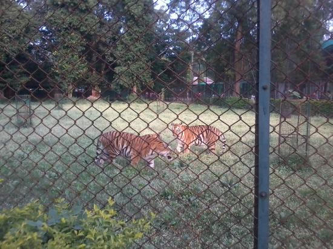

About Maharajbagh Zoo
The Maharajbagh Zoo is located in Panjabrao Deshmukh Krishi Vidyapeeth in the heart of Nagpur city. It is the central zoo of the city and a popular spot frequented by families, children, and nature lovers. Built originally on the gardens of the Bhonsle and Maratha rulers of Nagpur, it currently functions under the administration of the Central Zoo Authority (CZA) of India and is maintained by Panjabrao Deshmukh Krishi Vidyapeeth (PKV).
The zoo houses a variety of wildlife including lions, tigers, leopards, deer, and peacocks. Additionally, a section of the garden has been developed into a rich botanical garden containing rare species of herbs, shrubs, and ornamental plants.
The History
Maharajbagh was established in 1894 as a hunting ground for Raje Bhonsle. Later during British rule, it was transferred to the Agriculture Department of the CP and Berar State. In 1969, this green sanctuary in the center of the city was handed over to Dr. Panjabrao Deshmukh Krishi Vidyapeeth (PDKV), Akola.
Renovation and beautification efforts started in 1992, replacing aging cages and creating a thriving environment for both wildlife and visitors. Today, it stands as a cherished green lung for the Orange City, offering walking trails and picnic spots surrounded by lush flora.
What It Is Known For
- Diverse Wildlife: Provides shelter to tigers, leopards, panthers, bears, hippos, spotted deer, and monkeys.
- Rich Avifauna: Home to various bird species including cockatoos, hornbills, ducks, peacocks, paradise parrots, owls, and hawks.
- Botanical Garden: Features hundreds of flowering trees, thick bushes, and rare plant varieties.
- Photography & Educational Trips: A popular destination for wildlife photographers and school excursions.
Best Time To Visit
While the zoo remains open and accessible throughout the year, the best period to visit is from October to March. The pleasant winter weather makes outdoor walking, sightseeing, and animal spotting much more enjoyable.
How To Reach
Located centrally in Nagpur, the zoo is easily accessible via local city buses, auto-rickshaws, and private taxis.
Nearest Railway Station: Nagpur Junction
Nearest Airport: Dr. Babasaheb Ambedkar International Airport